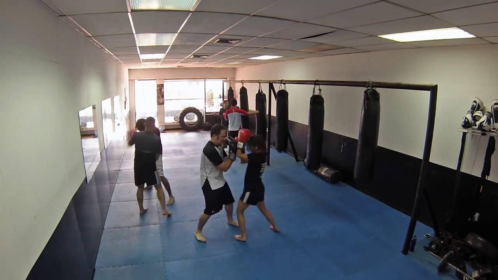

Cross gym trainings
Cross training

Cross training je sat vremena kvalitetnog treninga za angažovanje mišica celog tela. Reč je o fitnes programu koji predstavlja kombinaciju kardio vežbi i vežbi snage, koje dovode do poboljšanja motorike, fleksibilnosti, izgradnje i zategnutosti mišića kao i do sagorevanja masnih naslaga.
Saznaj više o programuCross conditioning

Cross conditioning treningom aktiviraju se mnogi mišići i zglobovi i stavljaju se u funkciju različitim delovima tela, što se postiže specifičnim kretanjem kod kog se telo savija u tri osnovne ravni: frontalnoj, transverzalnoj i sagitalnoj.
Saznaj više o programuCross box
Cross box počinje sa željom osobe da poboljša svoj stepen fitnesa, dok upoznaje osnovne osnovne sportske i borilne vežbe na svetu, Boxing. Cilj CrossBox-a je da uspostavi osnovnu smjernicu za praktikanta da održi vrhunski nivo fitnessa sa minimalnom opremom ili prostorom.
Saznaj više o programuZumba
Zumba je u plesu, zabavi i muzici ali je takođe i veoma pažljivo kreiran trening. Svaki pokret i promena ritma osmišljeni su tako da stekneš vrhunski izgled, formu i zdravlje. Zumba je naročito poznata po uspesima oblikovanja delova tela kao sto su stomak i zadnjica.
Saznaj više o programuPilates
Pilates je u poslednjih nekoliko godina jedan od najpopularnijih vidova rekreacije kako u svetu tako i kod nas. Razlog tome je sto vežbanje pilatesa osim fizičke aktivnosti, telu daje i neophodno opuštanje i uspostavlja ravnotezu između fizičkog i mentalnog.
Saznaj više o programuYoga
Hatha yoga je jedna od najpoznatijih i najrasprostranjenijih vrsta joge na svetu. Joga nije samo fizičko vežbanje, već učenje uspostavljanja stanja potpunog mira i opuštenosti. Usmerena je na upostavljanje harmonije uma, tela i duha, odnosno postizanje stanja opuštenosti i sreće.
Saznaj više o programu